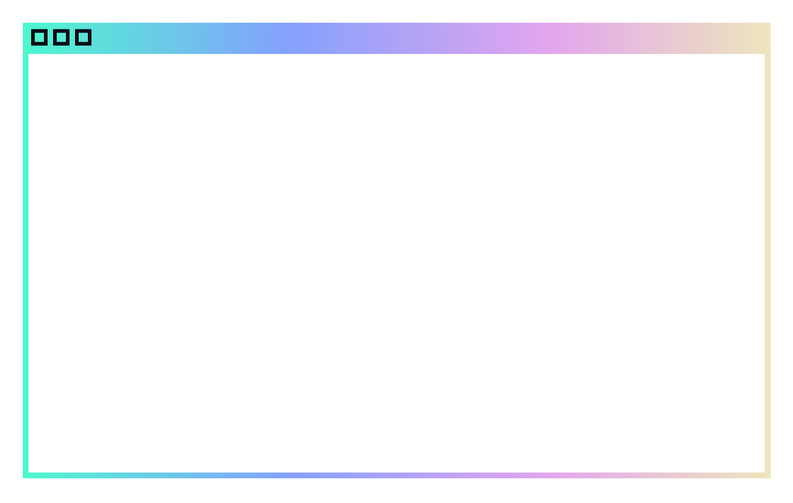
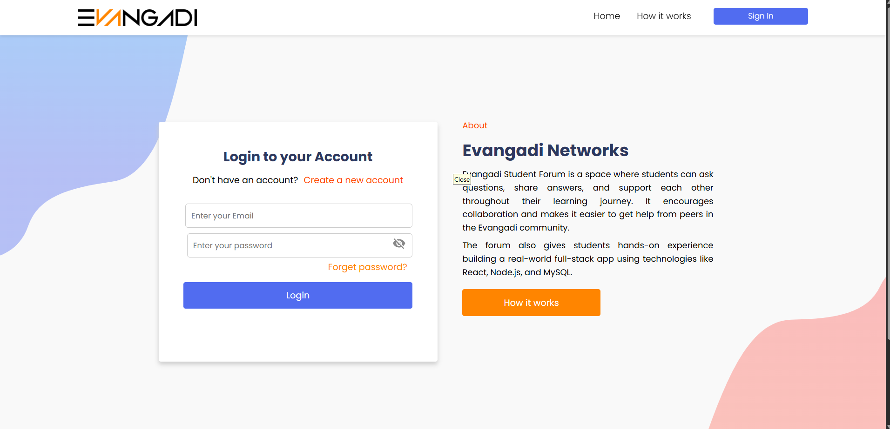
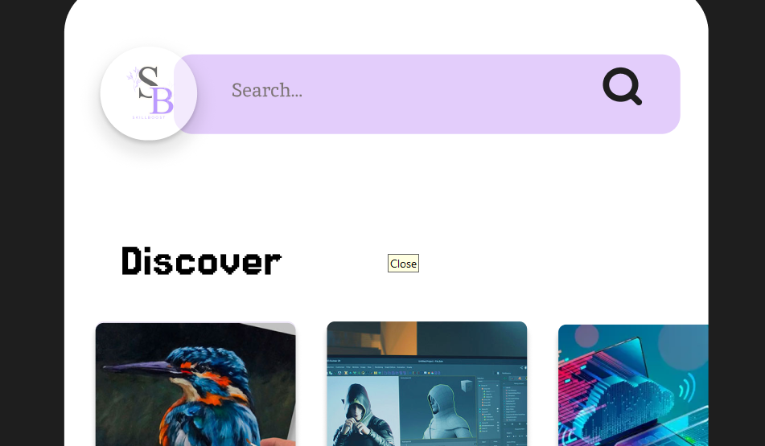
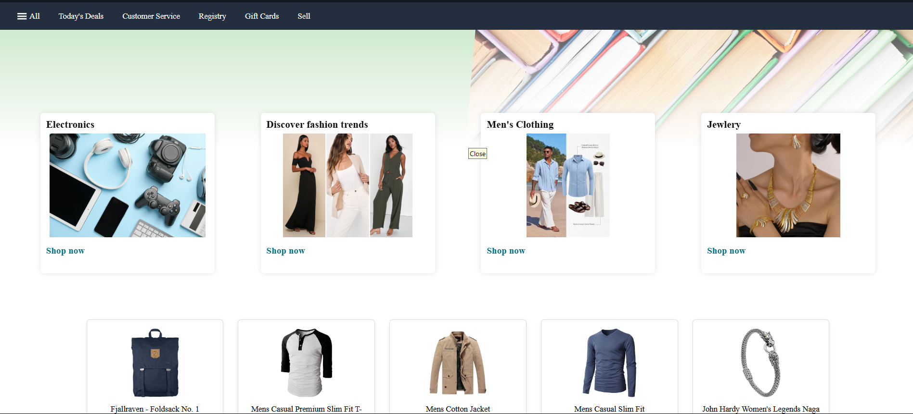
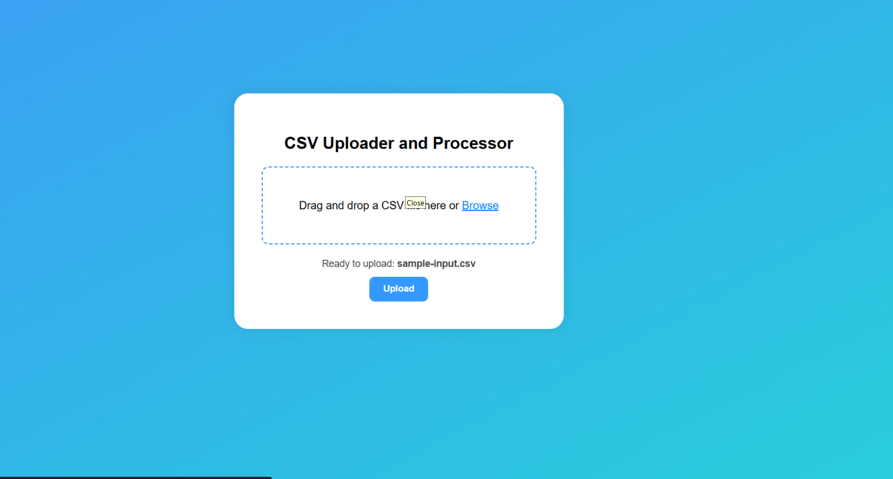
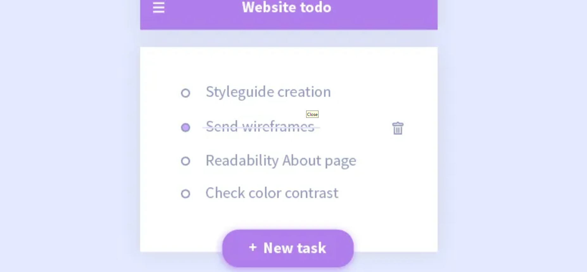

Hello, I'm Beth
design.code.build
Selected Works


An interactive online forum platform designed for engaging community discussions.
Evangadi Forum

A comprehensive e-learning platform featuring courses, quizzes, and progress tracking.
SkillBoost

A responsive e-commerce platform clone mimicking Amazon's core shopping experience.
Amazon clone

A robust tool for processing and analyzing CSV data, built for efficiency.
CSV Processor

A simple yet effective web-based application for managing daily tasks and to-do lists.
Task Manager
About Me
Hello! I'm Bethlehem, a software engineering student at Addis Ababa University, passionate about web design and development.
My academic journey at Addis Ababa University has equipped me with a strong foundation in software development principles, data structures, and algorithms. I specialize in front-end development, bringing designs to life with clean, efficient, and responsive code, and I'm currently exploring back-end technologies to understand the full web development stack.
I enjoy translating complex ideas into intuitive user interfaces and am constantly seeking to expand my knowledge and skills in various programming paradigms and tools. Outside of my studies, I'm always looking for opportunities to contribute to open-source projects and collaborate on meaningful initiatives.
Contact
I'd love to hear from you. Email me at nate85here@gmail.com.